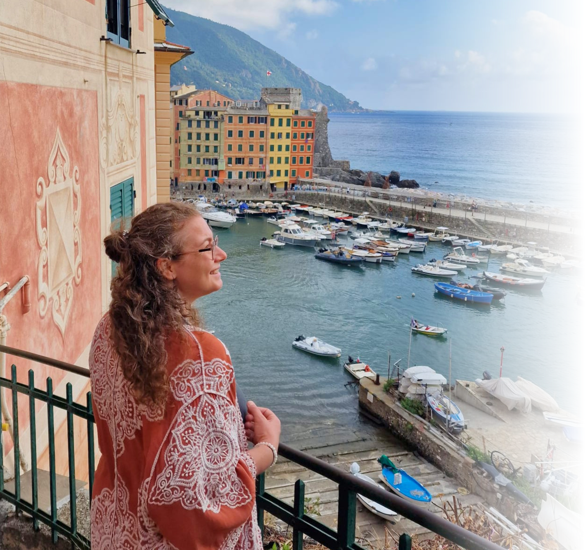
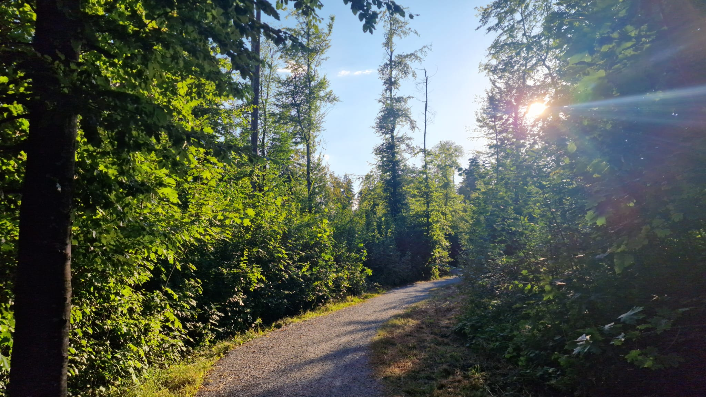

Your life looks successful from the outside, while something inside feels increasingly absent.

What if you don’t have to become more,
only remember who you are?
This is where you stop surviving and start living.
Take the free assessment Find out how fulfilled are you, really?Maybe this feels familiar
You might be here because...
You overthink, overgive, and keep everyone else comfortable before checking what you need.
You know something needs to change, yet the same patterns keep quietly repeating.
You are ready for a different way of living, one that feels more honest, spacious, and yours.

Meet Roberta
This work was born from my own journey back to myself.
After more than a decade in corporate environments, I realised that success means very little when you no longer feel present inside your own life.
I now create spaces where women can slow down enough to hear themselves again and turn what they know into the way they actually live.
Read my story →Beyond Surviving
For women who are tired of holding everything together while quietly losing themselves.
Five weeks to reconnect with yourself, understand the patterns keeping you stuck, and begin making choices with more honesty, clarity, and inner safety.
5 Sept – 3 Oct 2026
Five Saturdays
Small pilot group
Up to 10 women
Live online sessions
Support & recordings
WhatsApp support
Questions & weekly rituals

What women are saying

“Working with Roberta helped me build more trust in myself and make decisions without guilt.”

“Working with Roberta feels like being gently guided by your own inner voice.”

“Roberta creates a space where I feel seen, safe, and deeply supported to grow with compassion.”

Other paths back to yourself.
Group or private · 4 weeks
The Freedom Within
A focused journey to release what holds you back and step into your freedom and purpose.
Learn more →Private 1:1 coaching
Inner Bloom
Deep, personalised support to remember who you are and create lasting inner transformation.
Learn more →
You built the life you were supposed to want.
Now it is time to create the life you deeply want.
Conscious Leadership & Team Growth
Helping leaders build workplaces where people don’t just perform.
They thrive.
Human, practical leadership development for healthier communication, stronger trust, and sustainable performance.
Explore leadership work